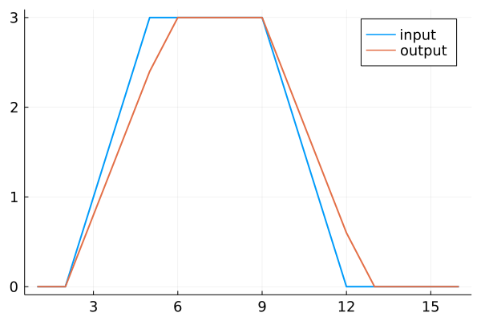
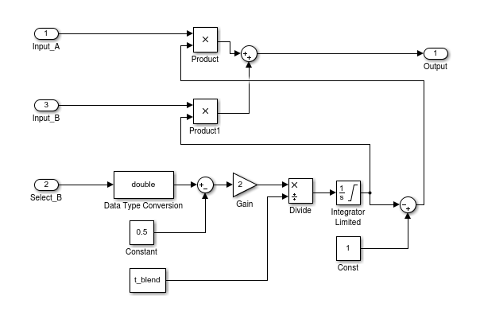
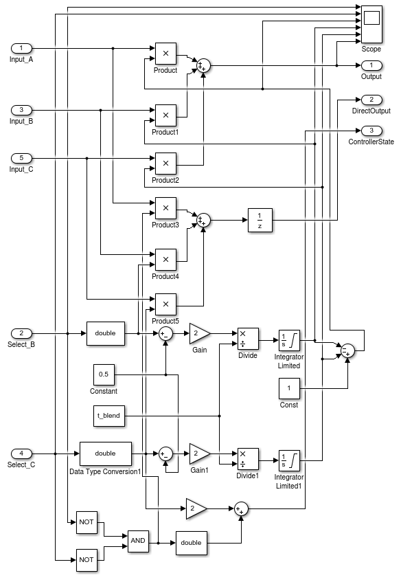

Generic Components
Integrator
WinchControllers.Integrator — Typemutable struct IntegratorDiscrete integrator with external reset.
Fields
dt::Float64i::Float64: Default: 1.0output::Float64: Default: 0.0last_output::Float64: Default: 0.0
WinchControllers.Integrator — Typefunction Integrator(dt, i=1.0, x0=0.0)Constructor for discrete integrator with external reset.
Parameters
- dt: time-step [s]
- i: integration constant
- x0: initial and last output
Returns
- a new struct of type
Integrator
WinchControllers.reset — Functionreset(int::Integrator, x0=0.0)Reset the integrator int to the value x0.
Parameters
- int::Integrator: An integrator struct
- x0: default value =0.0; initial and last output
Returns
- nothing
WinchControllers.calc_output — Methodcalc_output(int::Integrator, input)Calculate and return the output without updating last_output.
Parameters
- int::Integrator: An integrator struct
- input: The input value
Returns
- the output value
WinchControllers.on_timer — Methodon_timer(int::Integrator)Update the field last_output. Must be called once per time-step.
Parameters
- int::Integrator: An integrator struct
Returns
- nothing
UnitDelay
WinchControllers.UnitDelay — Typemutable struct UnitDelayUnitDelay, delay the input signal by one time step.
Fields
last_output::Float64: Default: 0last_input::Float64: Default: 0
WinchControllers.reset — Methodreset(ud::UnitDelay)Reset the last_input and last_output of the struct ud to zero.
Parameters
- ud::UnitDelay: A
UnitDelaystruct
Returns
- nothing
WinchControllers.calc_output — Methodcalc_output(ud::UnitDelay, input)Calculate and return the output and update the last_input, but not the last_output.
Parameters
- int::UnitDelay: A
UnitDelaystruct - input: The input value
Returns
- the last output
WinchControllers.on_timer — Methodon_timer(ud::UnitDelay)Update the field last_output. Must be called once per time-step.
Parameters
- ud::UnitDelay: A UnitDelay struct
Returns
- nothing
RateLimiter
WinchControllers.RateLimiter — Typemutable struct RateLimiterLimit the rate of change of the output signal (return value of calc_output) to ± limit. Unit of limit: 1/s. Example: .
Fields
dt::Float64: Default: 0.05limit::Float64: Default: 1output::Float64: Default: 0last_output::Float64: Default: 0
WinchControllers.RateLimiter — TypeRateLimiter(dt, limit=1.0, x0=0.0)Parameters
- dt: the time-step [s]
- limit: the rate limit, default: 1.0 [1/s]
- x0: the initial output, default: 0.0
Returns
- a struct of type RateLimiter
WinchControllers.reset — Functionreset(rl::RateLimiter, x0=0.0)Reset the output and last_output of the struct ud to x0.
Parameters
- rl::RateLimiter: A
RateLimiterstruct - x0: the initial value of the output signal
Returns
- nothing
WinchControllers.calc_output — Methodcalc_output(rl::RateLimiter, input)Calculate and return the output, but not the last_output.
Parameters
- rl::RateLimiter: A
RateLimiterstruct - input: The input value
Returns
- the new output
WinchControllers.on_timer — Methodon_timer(rl::RateLimiter)Update the field last_output. Must be called once per time-step.
Parameters
- rl::RateLimiter: A
RateLimiterstruct
Returns
- nothing
Mixer_2CH
WinchControllers.Mixer_2CH — Typemutable struct Mixer_2CHMix two analog inputs. Implements the following block diagram: .
Fields
dt::Float64t_blend::Float64: Default: 1.0factor_b::Float64: Default: 0select_b::Bool: Default: false
WinchControllers.Mixer_2CH — MethodMixer_2CH(dt, t_blend)Constructor for Mixer_2CH, a component for mixing two analog inputs.
Parameters
- dt: the time-step [s]
t_blend: the time for blending over from one channel to the other [s]
Returns
- a struct of type Mixer_2CH
WinchControllers.select_b — Methodselect_b(m2::Mixer_2CH, select_b::Bool)Select input a or b.
Parameters
- m2::Mixer_2CH: the two-channel mixer
- select_b: if true, select channel b, otherwise select channel a
Returns
- nothing
WinchControllers.calc_output — Methodcalc_output(m2::Mixer_2CH, input_a, input_b)Calculate and return the output of the two channel mixer.
Parameters
- m2::Mixer_2CH: a two channel mixer component
- input_a: input value of channel A
- input_b: input value of channel B
Returns
- the output value
WinchControllers.on_timer — Methodon_timer(m2::Mixer_2CH)Update the field m2.factor_b. Must be called once per time-step.
Parameters
- m2::Mixer_2CH: a two channel mixer
Returns
- nothing
Mixer_3CH
WinchControllers.Mixer_3CH — Typemutable struct Mixer_3CHMix three analog inputs. Implements the following block diagram: .
Fields
dt::Float64t_blend::Float64: Default: 1.0factor_b::Float64: Default: 0factor_c::Float64: Default: 0select_b::Bool: Default: falseselect_c::Bool: Default: false
WinchControllers.get_state — Methodfunction get_state(m3::Mixer_3CH)Return the controller state as integer.
Returns:
- wcsLowerForceControl = 0 # input b selected
- wcsSpeedControl = 1 # input a selected
- wcsUpperForceControl = 2 # input c selected
WinchControllers.select_b — Methodselect_b(m3::Mixer_3CH, select_b::Bool)Make input b the active input.
To make channel a the active input call:
select_b(m3, false)
select_c(m3, false)Parameters
- m3::Mixer_3CH: the three-channel mixer
- select_b: if true, select channel b
Returns
- nothing
WinchControllers.select_c — Methodselect_c(m3::Mixer_3CH, select_c::Bool)Make input c the active input.
Parameters
- m3::Mixer_3CH: the three-channel mixer
- select_c: if true, select channel c
Returns
- nothing
WinchControllers.calc_output — Methodcalc_output(m3::Mixer_3CH, input_a, input_b, input_c)Calculate and return the output of the three channel mixer.
Parameters
- m3::Mixer_3CH: a three channel mixer component
- input_a: input value of channel A
- input_b: input value of channel B
- input_c: input value of channel C
Returns
- the output value
WinchControllers.on_timer — Methodon_timer(m3::Mixer_3CH)Update the fields m3.factor_b and m3.factor_c. Must be called once per time-step.
Parameters
- m3::Mixer_3CH: a three channel mixer
Returns
- nothing